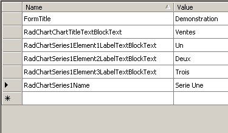
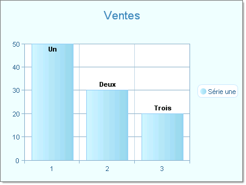

Localization Example Using Local Resources, Implicit Expression
This tutorial will demonstrate localizing the RadChart title, series name and chart series item labels.
The example will use local resources and use implicit expressions to bind them.
See Multi-Language Support for RadChart for an overview of localization options.
[C#] Create RadChart and add items
RadChart radChart = new RadChart();
radChart.PlotArea.XAxis.MaxValue = 3;
radChart.PlotArea.XAxis.MinValue = 1;
radChart.PlotArea.XAxis.Step = 1;
Telerik.Charting.ChartSeries chartSeries = new Telerik.Charting.ChartSeries();
chartSeries.Name = "Sales";
chartSeries.Type = ChartSeriesType.Bar;
radChart.ChartTitle.TextBlock.Text = "Sales";
radChart.Series.Add(chartSeries);
chartSeries.AddItem(50, "One");
chartSeries.AddItem(30, "Two");
chartSeries.AddItem(20, "Three");
this.Controls.Add(radChart);
[VB.NET] Create RadChart and add items
Dim radChart As New RadChart()
radChart.PlotArea.XAxis.MaxValue = 3
radChart.PlotArea.XAxis.MinValue = 1
radChart.PlotArea.XAxis.[Step] = 1
Dim chartSeries As New Telerik.Charting.ChartSeries()
chartSeries.Name = "Sales"
chartSeries.Type = ChartSeriesType.Bar
radChart.ChartTitle.TextBlock.Text = "Sales"
radChart.Series.Add(chartSeries)
chartSeries.AddItem(50, "One")
chartSeries.AddItem(30, "Two")
chartSeries.AddItem(20, "Three")
Me.Controls.Add(radChart)
In design mode of the Visual Studio IDE right-click the Project node in the Solution Explorer tree and select Add >> New Item.
Select the Resource File template and give it a name, for example Resource. *It will be renamed as
*Resource.resx in the project*.*Double click Resource.resx in the Solution Explorer tree.
Add a new entry named "RadChart1ChartTitleTextBlockText" with value "Top Sales"

- Set the radChart.ChartTitle.TextBlock.Text to the RadChart1ChartTitleTextBlockText key:
[C#] Setting the TextBlock text
radChart.ChartTitle.TextBlock.Text = SamplesCS.Chart.LocalizationResource.RadChartChartTitleTextBlockText;
[VB.NET] Setting the TextBlock text
radChart.ChartTitle.TextBlock.Text = Resource.RadChart1ChartTitleTextBlockText
In the Solution Explorer, add a new Resource File and name it using the culture code for French, "Resource.fr-FR.resx".
Double click "Resource.fr-FR.resx".
Enter "Ventes" for the "RadChart1ChartTitleTextBlockText" resource name.

Run the application. The chart title should still be "Sales". Stop the application.
Now, for C# users in the beginning of the Program.Main method (located in Program.cs), set the CurrentUICulture to French. For VB.NET users set it before the code added in step 5 :
[C#] Changing the Localization
//this line goes in the Main method of the application, before the Application.Run method
Thread.CurrentThread.CurrentUICulture = new CultureInfo("fr-FR");
[VB.NET] Changing the Localization
'this line of code goes before the code added in step 5 (setting the chart title text), so it can be localized too
Thread.CurrentThread.CurrentUICulture = New CultureInfo("fr-FR")
- Run the application again. The title should now be localized to "Ventes".

Stop the application.
Now that the chart title is localized we turn to the series name and item labels.
Add another resource key to the resource files that we made: RadChart1Series1Name.
The ChartSeries tag will now look like the example below:
[C#] Setting the Series name
radChart.Series[0].Name = SamplesCS.Chart.LocalizationResource.RadChartSeries1Name;
[VB.NET] Setting the Series name
radChart.Series(0).Name = Resource.RadChart1Series1Name
- To each item in the series add another resource key "RadChart1Series1Element1LabelTextBlockText". Name the resource keys "RadChart1Series1Element__1__LabelTextBlockText", "RadChart1Series1Element__2__LabelTextBlockText" and "RadChart1Series1Element__3__LabelTextBlockText" respectively:
[C#] Localizing the items
chartSeries.Items[0].Label.TextBlock.Text = SamplesCS.Chart.LocalizationResource.RadChartSeries1Element1LabelTextBlockText;
chartSeries.Items[1].Label.TextBlock.Text = SamplesCS.Chart.LocalizationResource.RadChartSeries1Element2LabelTextBlockText;
chartSeries.Items[2].Label.TextBlock.Text = SamplesCS.Chart.LocalizationResource.RadChartSeries1Element3LabelTextBlockText;
[VB.NET] Localizing the items
chartSeries.Items(0).Label.TextBlock.Text = Resource.RadChart1Series1Element1LabelTextBlockText
chartSeries.Items(1).Label.TextBlock.Text = Resource.RadChart1Series1Element2LabelTextBlockText
chartSeries.Items(2).Label.TextBlock.Text = Resource.RadChart1Series1Element3LabelTextBlockText
- In the Resource.resx file the keys and values should be set as it follows:

- Copy these items to the Resource.fr-FR.resx file and provide the translated values as shown in the screen shot below. You can delete the old entries and copy and paste from Resource.resx.

- Run the application. The chart title, series and item labels should all display translated values. The screen shot below shows the appearance of the completed chart. Note: a skin has been applied to the chart to make the values easily visible:
